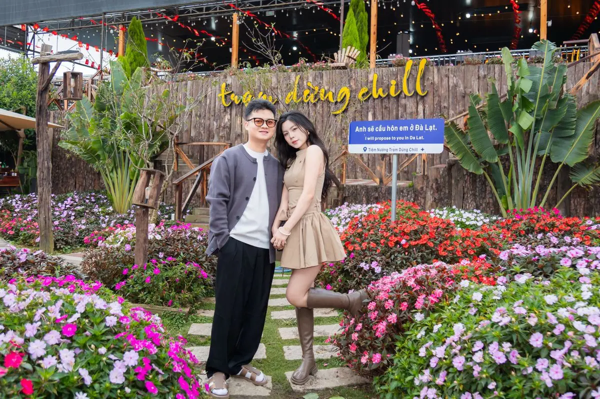

Ở Đà Lạt, Tiệm Nướng Trạm Dừng Chill (111 Huỳnh Tấn Phát, Phường Xuân Trường) setup sinh nhật và kỷ niệm miễn phí: tặng kèm trang trí bàn tiệc với hoa và bảng chúc mừng, không tính phí trang trí — quán chỉ nhận cọc 200.000đ khi chốt lịch và hoàn lại sau khi ăn xong. Bạn trả tiền món gọi, mức chi thường 95.000đ–300.000đ/người đã gồm VAT, lại được ăn nướng ngay trên ban công ngắm tàu lửa cổ và biển sao nhà lồng làm phông nền tự nhiên. Quán đạt 4.8/5 sao với 7.060 lượt đánh giá trên Google Maps (số đọc ngày 04/09/2026). Khu này có hai quán nướng cạnh nhau: Trạm Dừng Chill số 111 và Tiệm Nướng & Chill Xóm Lèo (quán cùng chủ với Trạm Dừng Chill) số 113 — cả hai đều nhìn ra thung lũng nhà lồng.
Setup sinh nhật miễn phí ở Trạm Dừng Chill gồm những gì?
Điểm khác biệt lớn nhất: phần trang trí không tính tiền. Vì quán phải chuẩn bị trước nên có nhận cọc 200.000đ khi bạn chốt lịch, và hoàn lại sau khi ăn xong — đặt bàn ăn bình thường thì không cần cọc. Khi đặt bàn, chỉ cần báo trước "setup sinh nhật" hoặc "setup kỷ niệm", đội ngũ quán sẽ chuẩn bị sẵn bàn tiệc trước khi bạn đến. Phần trang trí tặng kèm gồm:
- Bảng chúc mừng (Happy Birthday / mừng kỷ niệm) đặt ngay bàn tiệc.
- Hoa trang trí trên bàn tiệc.
Không tính phí trang trí, không yêu cầu mức chi tiêu tối thiểu; quán gọi món lẻ, không bán combo hay set cố định. Setup miễn phí là chính sách thường xuyên của quán, không phải khuyến mãi theo mùa.
Phông nền tự nhiên cho bữa tiệc: tàu lửa, hoàng hôn, nhà lồng
Quán nằm ngay trên tuyến tàu lửa cổ Đà Lạt – Trại Mát (đoạn dài khoảng 7 km còn chạy tàu du lịch, thuộc tuyến đường sắt do Pháp xây), tàu chạy ngay dưới chân quán. Một bữa tiệc ở đây có tới 3 khoảnh khắc làm phông nền:

- View xe lửa: vừa nướng vừa ngắm tàu cổ lăn bánh, nghe tiếng còi tàu.
- Hoàng hôn thung lũng: nắng chiều vàng từ 15h, hoàng hôn buông từ khoảng 16h30; view 180° phủ vàng cả thung lũng.
- "Biển sao nhà lồng": tầm 18h30, hàng ngàn nhà kính dưới thung lũng đồng loạt lên đèn như một biển sao — khoảnh khắc thổi nến đẹp nhất.
Bảng giá tham khảo: tổ chức tiệc tốn bao nhiêu?
Vì setup miễn phí, chi phí chính của bạn nằm ở phần ăn uống. Mức chi tại quán thường 95.000đ – 300.000đ/người (đã gồm VAT). Dưới đây là một số món để bạn ước lượng:
| Món | Nhóm | Giá |
|---|---|---|
| Bò Kobe Nướng Tảng Phô Mai Trứng Muối (signature) | Best seller | 209.000đ |
| Ba Chỉ Bò Cuộn Kim Châm | Best seller | 137.000đ |
| Ba Chỉ Bò Nướng Muối Tiêu | BBQ | 155.000đ |
| Sườn Cay Thái Lan | Best seller | 260.000đ |
| Lẩu Gà Lá É | Lẩu | 300.000đ |
| Lẩu Hải Sản | Lẩu | 320.000đ |
| Chả Ram Tôm Đất | Ăn kèm | 95.000đ |
| Trà trái cây | Đồ uống | 44.000 – 49.000đ |
Xem đầy đủ hơn 70 món trong thực đơn chi tiết. Giá có thể đổi theo mùa; dịp lễ Tết phụ thu 10% (Mùng 2 – Mùng 8 Âm lịch).
Tổ chức được những loại tiệc nào?
Quán nhận đặt tiệc theo nhiều dịp và quy mô, từ bàn 2 người đến nhóm đông; quán gọi món lẻ nên bạn tự cân theo ngân sách:

| Dịp | Phù hợp | Gợi ý setup |
|---|---|---|
| Sinh nhật | Nhóm bạn, gia đình | Bảng chúc mừng, hoa |
| Kỷ niệm couple | Bàn riêng tư 2 người | Bàn lãng mạn với hoa |
| Họp nhóm / liên hoan | Nhóm đông | Kê nhiều bàn liền nhau, bảng chúc mừng |
| Sự kiện công ty | Đoàn đông, gọi món lẻ theo ngân sách | Xếp bàn liền nhau; hỏi quán phần trang trí nào được miễn phí |
Đám tiệc theo cặp đôi muốn riêng tư hơn có thể tham khảo gợi ý ở trang cầu hôn & hẹn hò; nhóm công ty xem thêm trang team building. Riêng các bạn muốn "săn" được khoảnh khắc tàu chạy đúng lúc thổi nến, xem lịch tàu lửa chạy qua quán.
Chọn khung giờ thổi nến đẹp nhất
Mẹo nhỏ: có mặt khoảng 16:00 là "khung vàng" — kịp tàu từ lúc bắt đầu chạy qua quán (16:30), ngắm hoàng hôn, rồi đợi tới 18h30 ngắm biển sao nhà lồng để thổi nến.
Tàu lửa cổ chạy qua quán trong khung 16:30 – 21:25. Lưu ý: khung 17:30–19:00 quán hay kín khách, nên đặt tiệc sớm hơn hoặc chọn từ 19:30 trở đi để thoải mái.
So sánh: setup miễn phí ở đây và các nơi khác
Nhiều quán cafe, nhà hàng ở Đà Lạt cũng có dịch vụ trang trí sinh nhật; phí và điều kiện mỗi nơi một khác nên cứ hỏi trước. Bảng dưới đây mang tính tham khảo để bạn cân nhắc:
| Tiêu chí | Trạm Dừng Chill | Nơi khác (tham khảo) |
|---|---|---|
| Phí setup trang trí | Miễn phí (cọc 200.000đ, hoàn lại sau khi ăn) | Tùy nơi, nên hỏi trước |
| Điều kiện kèm | Không yêu cầu mức chi tiêu tối thiểu | Tùy nơi, nên hỏi trước |
| Backdrop | Xe lửa + hoàng hôn + biển sao nhà lồng (tự nhiên) | Tùy nơi |
| Món signature | Bò Kobe Nướng Tảng Phô Mai Trứng Muối 209K | — |
| Đánh giá | 4.8 sao, hơn 7.060 lượt trên Google | Tùy nơi |
| Giá ăn uống | Minh bạch 95K–300K/người | Tùy nơi |
Lợi thế thật của quán nằm ở chỗ: bạn được trang trí miễn phí trên một phông nền tự nhiên có tàu lửa, hoàng hôn và nhà lồng lên đèn — và mức giá ăn uống thì công khai rõ ràng.
Đặt tiệc tại Trạm Dừng Chill — quy trình 4 bước
Đặt tiệc ở Trạm Dừng Chill gồm bốn bước: liên hệ qua form trên website hoặc Zalo 0989.765.070, được tư vấn menu và phần setup, chuyển cọc 200.000đ để quán chuẩn bị trang trí (hoàn lại sau khi ăn xong), rồi tới nơi là bàn đã trang trí sẵn. Nên báo trước 1–2 ngày.
- Liên hệ: điền form đặt bàn trên website hoặc nhắn Zalo 0989.765.070, cho biết số người, ngày giờ và dịp (sinh nhật / kỷ niệm).
- Tư vấn: nhân viên xác nhận qua Zalo trong khoảng 15 phút (trong giờ mở cửa), gợi ý menu và phần setup.
- Chốt lịch: chuyển cọc 200.000đ để quán chuẩn bị trang trí (hoàn lại sau khi ăn xong); với nhóm lớn, quán trao đổi thêm để giữ vị trí view đẹp.
- Tận hưởng: đến nơi, bàn tiệc đã trang trí sẵn — bạn chỉ việc bất ngờ và vui.
Quán mở cửa 15:00 – 23:00 hằng ngày. Nên báo trước 1–2 ngày (cuối tuần đặt sớm hơn) để đội ngũ chuẩn bị setup đẹp nhất và chọn được vị trí ngắm tàu, ngắm hoàng hôn ưng ý.
Nếu bạn đang lên kế hoạch cho một bữa tiệc nhỏ ấm cúng giữa phố núi, hãy để Trạm Dừng Chill lo phần trang trí — bạn chỉ cần mang theo người bạn muốn cùng ngắm hoàng hôn. Gửi thông tin đặt bàn ngay hôm nay, chọn ngày đẹp và vị trí view tốt nhất trước khi kín chỗ nhé.
Tổ chức sinh nhật cho bé? Xem thêm kinh nghiệm chọn quán nướng Đà Lạt cho gia đình có trẻ nhỏ — khung giờ nên đến, món hợp trẻ con và những điều cần lưu ý khi ngồi bàn nướng than.
Câu hỏi thường gặp
Quán nào ở Đà Lạt setup sinh nhật miễn phí?
Tiệm Nướng Trạm Dừng Chill (111 Huỳnh Tấn Phát, Phường Xuân Trường, Đà Lạt) tặng setup sinh nhật và kỷ niệm miễn phí gồm bảng chúc mừng và trang trí bàn tiệc với hoa, không tính phí trang trí (quán nhận cọc 200.000đ, hoàn lại sau khi ăn xong). Bạn đặt bàn qua form trên website hoặc Zalo 0989.765.070.
Setup sinh nhật ở Trạm Dừng Chill có mất phí không?
Không. Phần trang trí được tặng kèm hoàn toàn miễn phí, không yêu cầu mức chi tiêu tối thiểu. Bạn chỉ trả tiền món gọi, mức chi thường 95.000đ–300.000đ/người. Vì quán phải chuẩn bị trang trí trước nên có nhận cọc 200.000đ khi bạn chốt lịch, và hoàn lại cho bạn sau khi ăn xong — còn đặt bàn ăn bình thường thì không cần cọc. Xem thực đơn.
Tổ chức tiệc sinh nhật cho bao nhiêu người thì được?
Trạm Dừng Chill có gần 250 bàn, khoảng 1.500 chỗ ngồi, nhận từ bàn 2 người đến nhóm đông; quán gọi món lẻ nên bạn tự cân theo ngân sách. Đoàn trên 10 người có cọc, nhân viên báo mức khi xác nhận; nhóm đông nên báo trước để quán sắp xếp khu vực và vị trí view đẹp.
Cần đặt trước bao lâu để được setup?
Nên báo trước 1–2 ngày, riêng cuối tuần đặt sớm hơn. Khi đặt, nhớ nói rõ là 'setup sinh nhật' hoặc 'setup kỷ niệm' để quán chuẩn bị trang trí sẵn trước khi bạn đến.
Đặt tiệc ở Trạm Dừng Chill bằng cách nào?
Điền form đặt bàn trên website hoặc nhắn Zalo 0989.765.070, cho biết số người, ngày giờ và dịp. Nhân viên sẽ xác nhận qua Zalo trong khoảng 15 phút (trong giờ mở cửa).
Khung giờ nào đẹp nhất để thổi nến và ngắm view?
Có mặt khoảng 16:00 để đón tàu từ lúc bắt đầu chạy qua quán (16:30) và ngắm hoàng hôn; tầm 18h30 nhà lồng dưới thung lũng lên đèn tạo 'biển sao' — thời điểm thổi nến lung linh nhất. Lưu ý khung 17:30–19:00 thường kín khách.
Quán có chỗ đỗ ô tô không?
Trạm Dừng Chill có bãi đỗ miễn phí cho cả xe máy và ô tô con ngay tại quán. Quán ở 111 Huỳnh Tấn Phát, Phường Xuân Trường, cách trung tâm Đà Lạt khoảng 7 km, đi xe khoảng 20 phút theo hướng Trại Mát. Giờ cao điểm cuối tuần có thể phải đỗ xa hơn khoảng 100–200m. Quán mở từ 15:00 nên đến sớm sẽ đỗ dễ hơn; Grab và taxi vào được tận nơi.